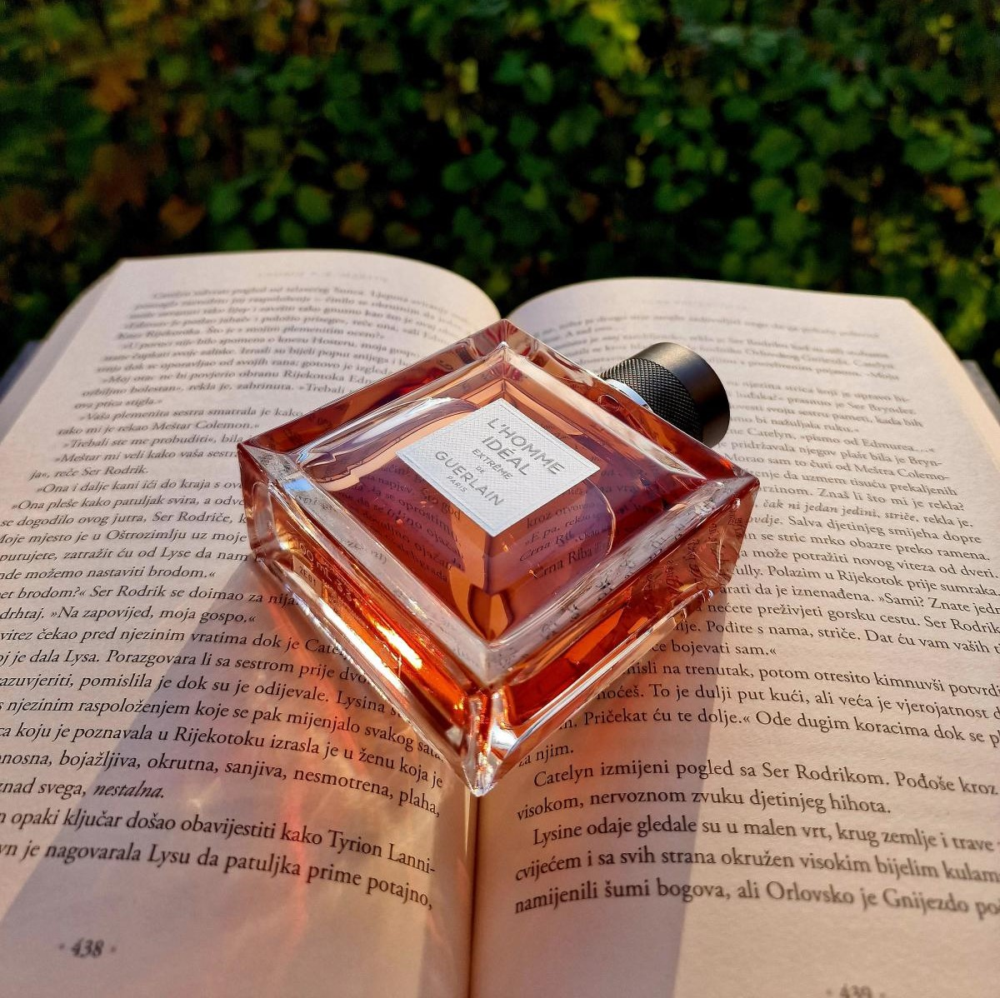
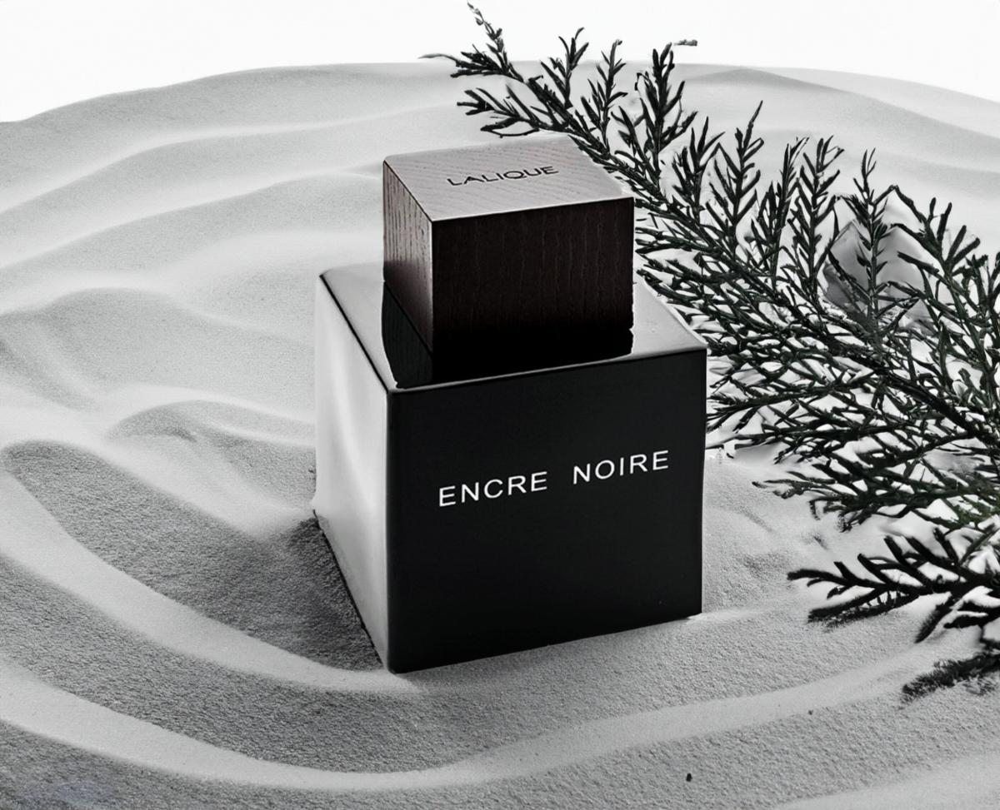

Perfume Selection Tips
Choosing the perfect perfume is an intimate and personal experience that can elevate your style and leave a lasting impression.
When embarking on your fragrance journey, it's crucial to grasp the composition of perfumes and how they can suit your preferences. Perfumes are meticulously crafted using a combination of natural and synthetic components that blend harmoniously to create a distinctive scent profile. By understanding the different fragrance families, such as floral, oriental, woody, or fresh, and the natural essences composing each family you can narrow down your favourite essences and create a perfume that resonates with your unique style and preferences. Consider also factors like the longevity and overall intensity you wish to have to ensure it aligns with your preferences. Experiment different scent notes and their intensity to make sure you use only the ones that fits you. In this way you will know how to pick the right cologne that truly suits you.
Consider The Season and Occasion.
Perfumes interact with your body chemistry in a unique way, making it essential to consider how a fragrance will evolve on your skin. Factors such as skin type, pH level , level of water or melanin and natural body odor can influence how a perfume smell on you.
Understanding your skin type and your pH level is crucial in the process of choosing a cologne that suits you.
These factors can guide you towards fragrances that complement your unique chemistry. For instance, oily skin and dark skin tend to retain scents longer and pair well with oriental, heavy fragrances or those with spices, sweetness, floriental, balsamic, musky, and leathery notes.
On the other hand, dry, fair, and often acidic skin may benefit from more citrusy, green, ozonic, aromatic, fruity, floral, and woody notes. By experimenting with different perfume families, you can discover the colognes that best suit your body chemistry.
*Tip: When testing perfumes, apply them to your pulse points and allow them to develop on your skin for a few hours.Observe how the scent evolves during this time before making a final decision.
Consider Asking for recommendations.
*Tip: Do not blind buy.
It is important to store your perfume in a cool and dark place, shielded from direct sunlight and extreme temperatures.
My Top 5 perfumes
1. Tom Ford Oud Wood

